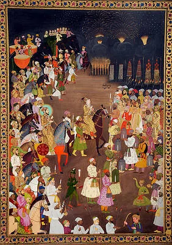

Marriage Procession of Dara Shikon
Details
SUBJECT MATTER: This is a beutiful vertical painting by Haji Madni. Marriage procession of Dara Shikon is the event on which this illustration is based on. This painting was made for account of making everyone remember the fabulous marriage procesion of Dara Shikon. The marriage of Dara Shikon was involving lavish display royality. Nadira Begum was whom Dara Shikon married in 1633 C.E.
DESCIPTION :This magnificient vertical painting is no doubt an all time masterpiece. The marriage procession of Dara Shikon was very brilliantly and gloriously depicted in this art. Dara Shikon is seen seated on a decorated horse, and just behind his horse, while his father is also riding a decorated horse. Three attendents are also following behind Dara Shikhoh. One of the attended has a candle in his hand, the second one is holding the horse and the third one is holding chauri. All the royal members are riding on horses while other attendents and people are on foot. The barat is moving and preceeding towards the bride's house. The crowd is shown is joyous and enjoyable moment on recieving the barat of Dara Shikoh. Most of the faces in this illustration are in Ek-chasm, meaning only one side of the face is shown or hat we call profile.
As already mentioned that to differentiate in supreme pawers with other people, halos were drawn. So in the painting you can see a halo around the neck of Shah Jahan, which suggest him as the supreme ruler. The halo is in color of light green. Women of royal family from groom's side are seen seated on one of the elephant, while on the other elephants, other elephants drummers are seated with their huge drums. All the figures in this painting of heroes and heroines are painted beautifully and organized clearly so that the scene does not seem over-crowded. This scene of Dara Shikon's fabulous marriage was depicted accurately and beautifully. This suggest that Haji Madni, the painter was very aware about this fabulous historic event.
Fireworks drawn with thin fine lines can be seen in this marvellous illustration by the artist. You can notice the well decorated flower border decoration with the use of white, red, maroon, blue and a touch of greyish black color. These colors are a great combination , even after being so extravegent border, the painting is still in the spotlight. Golden color is used by the artist as some important places . From this painting we can see that the marriage procession is so joyous, enjoyful and glorious that it seems like that people are loving this event more than any of the festivals celebrated together. This credit solely goes to the artist who make the painting so beautiful that on seeing it one only can wish to live a life this.
HUMAN VALUES
1.Discipline is an important aspect in one's life, all the crowd is shown moving with a disciplined, organized manner.
2.Mutual respect in marriage or any relationship, bride and groom both seems to be respectful towards each other.
3.Welcome a guest with open heart, guests are no less than a god.